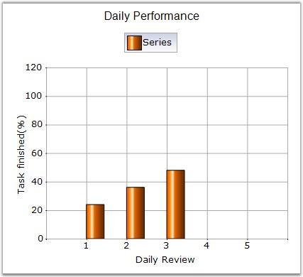

Specifies the width drawing mode for the columns in a column chart.
|
Details | |
|
Possible Values |
· DefaultWidthMode - The width of the columns will always be calculated to fill the space between columns. · FixedWidthMode - The width should be given in Series.Points[i].YValues[1], in pixels. If the width of the columns are not given in point YValues[1], then they are calculated to fill the space between columns. · RelativeWidthMode - Similar to the FixedWidthMode, the width is specified in YValues[1], but in units of X-axis range. |
|
Default Value |
DefaultWidthMode |
|
2D / 3D Limitations |
No |
|
Applies to Chart Element |
All Series |
|
Applies to Chart Types |
Column charts, BoxAndWhiskerChart, Candle Chart |
Here is some sample code.
|
[C#]
ChartSeries series1 = new ChartSeries("Series"); series.Points.Add(1, 24); series.Points.Add(2, 36); series.Points.Add(3, 48); chartControl1.Series.Add(series1); chartControl1.ColumnWidthMode = ChartColumnWidthMode.DefaultWidthMode; |
|
[VB.NET]
Dim series1 As ChartSeries = New ChartSeries("Series") series.Points.Add(1, 24) series.Points.Add(2, 36) series.Points.Add(3, 48) chartControl1.Series.Add(series1) chartControl1.ColumnWidthMode = ChartColumnWidthMode.DefaultWidthMode |
Figure 103: Column Chart with DefaultWidthMode
|
[C#]
double Interval = this.chartControl1.PrimaryXAxis.Range.Interval;
ChartSeries series = this.chartControl1.Model.NewSeries("Team 1"); // 2nd Y value specifies the column width series.Points.Add(1, new double[] { 24, Interval * 0.75 }); series.Points.Add(2, new double[] { 36, Interval * 0.75 }); series.Points.Add(3, new double[] { 48, Interval * 0.75 }); this.chartControl1.Series.Add(series);
this.chartControl1.ColumnWidthMode = ChartColumnWidthMode.RelativeWidthMode; |
|
[VB.NET]
Dim Interval As Double = Me.chartControl1.PrimaryXAxis.Range.Interval
Dim series As ChartSeries = Me.chartControl1.Model.NewSeries("Team 1") ' 2nd Y value specifies the column width series.Points.Add(1, New Double() { 24, Interval * 0.75 }) series.Points.Add(2, New Double() { 36, Interval * 0.75 }) series.Points.Add(3, New Double() { 48, Interval * 0.75 }) Me.chartControl1.Series.Add(series)
Me.chartControl1.ColumnWidthMode = ChartColumnWidthMode.RelativeWidthMode |
Figure 104: Column Chart with RelativeWidthMode
|
[C#]
ChartSeries series1 = new ChartSeries("Series"); // 2nd Y value specifies the column width series1.Points.Add(1, new double[] { 24, 25}); series1.Points.Add(2, new double[] { 36, 25}); series1.Points.Add(3, new double[] { 48, 25}); chartControl1.Series.Add(series1); chartControl1.ColumnWidthMode = ChartColumnWidthMode.FixedWidthMode; |
|
[VB.NET]
Dim series1 As ChartSeries = New ChartSeries("Series") ' 2nd Y value specifies the column width series1.Points.Add(1, New Double() { 24, 25}) series1.Points.Add(2, New Double() { 36, 25}) series1.Points.Add(3, New Double() { 48, 25}) chartControl1.Series.Add(series1) chartControl1.ColumnWidthMode = ChartColumnWidthMode.FixedWidthMode |
 Note: The width of the column can also be
specified by ColumnFixedWidth property. If both second Y value and
ColumnFixedWidth are specified, second Y value takes higher priority.
Note: The width of the column can also be
specified by ColumnFixedWidth property. If both second Y value and
ColumnFixedWidth are specified, second Y value takes higher priority.

Figure 105: Column Chart with FixedWidthMode
See Also
Column charts, BoxAndWhiskerChart, Candle Chart, ColumnFixedWidth